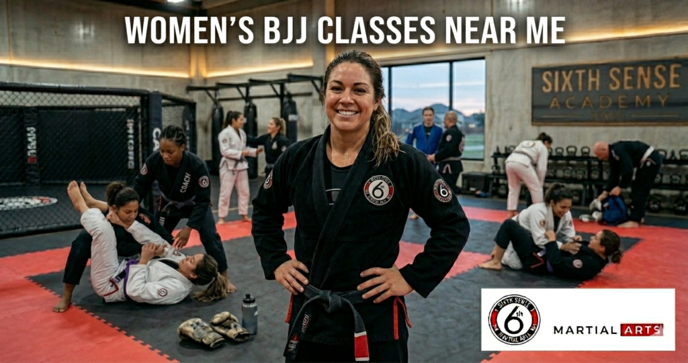
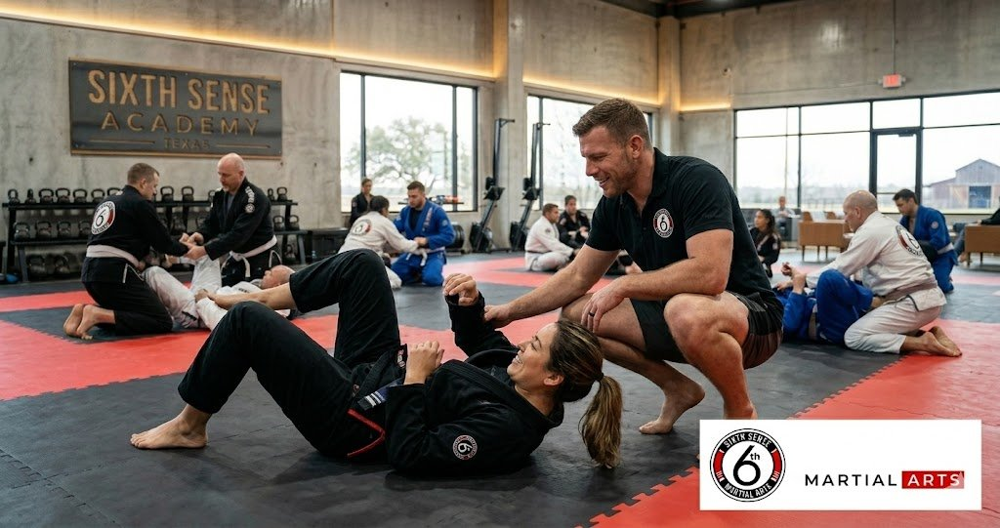
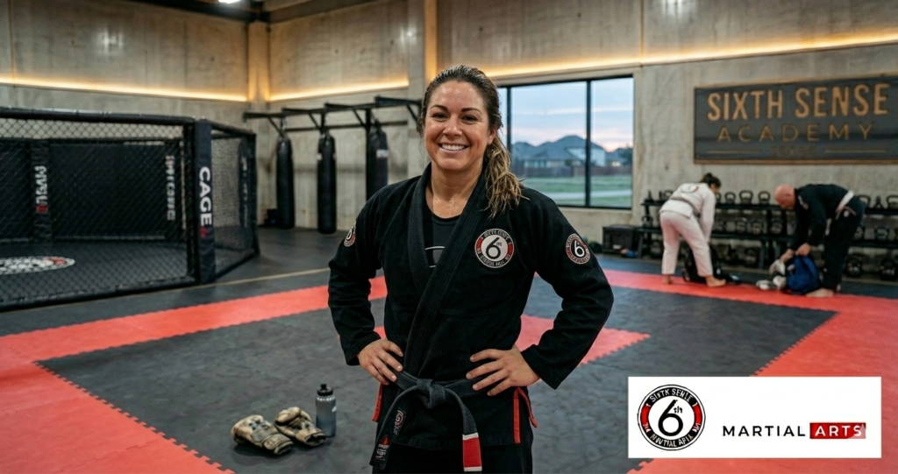

Women’s BJJ Classes Near Me: Why Brazilian Jiu-Jitsu Is the Most Life-Changing Thing Women in Coppell Can Do Right Now

A lot of women who search for womens bjj classes near me aren’t really sure what they’re looking for yet. They just know something needs to change. Maybe it’s that feeling walking to their car at night. Maybe it’s two years of gym memberships that went nowhere. Maybe their friend started training and came back looking and feeling completely different. Whatever brought you here the honest answer is this: Brazilian jiu-jitsu works for women in ways that almost nothing else does and Sixth Sense Martial Arts in Coppell TX is where that change actually happens.
This isn’t a general overview of martial arts. This is specifically about what jiu-jitsu does for women and why women bjj near me keeps getting searched by thousands of women every single month who are done waiting to feel strong.
Meet Coach Mattheus Galvao and the Team Behind Sixth Sense Martial Arts
Coach Mattheus Galvao is a black belt with years of hands-on instruction behind him and he built Sixth Sense Martial Arts around one idea. That idea is that every person who walks through the door deserves real skill and real attention. Not a number. Not a quick handshake and a locker key.
The gym sits at 817 S MacArthur Blvd #100 in Coppell TX and it serves the Valley Ranch area and surrounding communities. The team here isn’t just technically qualified. They actually care whether you improve and whether you feel safe on that mat every single session.
And that matters a lot when you’re talking about female bjj classes coppell. Because the coach sets the tone for everything.
What Women in Coppell Are Actually Dealing With
Most women searching ladies jiu jitsu near me are carrying at least one of three problems. Safety fears. Fitness frustration. Or the quiet worry that a martial arts gym just isn’t a place built for them. All three are real and all three have a direct answer inside a good jiu-jitsu program.
The Safety Problem Nobody Talks About Enough

Here’s the thing. Most women have experienced a moment that scared them. A parking lot that felt wrong. A situation that moved too fast. An interaction where they had no idea what to do if things escalated. That fear is real and it doesn’t go away by ignoring it.
Women self defense bjj addresses this in a way that pepper spray or a one-time seminar never really can. You don’t just learn a move once. You practice it over and over against a resisting opponent until your body actually knows what to do. Studies show that over 80 percent of real-world attacks end up on the ground. BJJ is built entirely around that scenario. It teaches women to grapple from disadvantaged positions and to use leverage and body mechanics instead of raw strength and to escape common attacks that happen in real life. For survivors of sexual assault in particular this kind of training has been documented to genuinely improve mental health and rebuild a sense of physical safety.
The Fitness Burnout Problem
Most women have tried the gym. They’ve tried running and group fitness classes and YouTube workouts. And a lot of those things work for a while. But they stop being interesting. There’s no progression. There’s no belt to earn. There’s no coach checking in on your form and no team celebrating when you finally nail a technique you’ve been working on for three weeks.
Jiu jitsu women fitness isn’t just burning calories although a solid bjj class can burn anywhere from 400 to 800 calories in a single session. It’s building real strength and endurance and coordination and mobility in a way that actually keeps women coming back. The workout is never the same twice. You’re always solving a new puzzle with your body and your mind.
The Intimidation Factor
Women who search ladies jiu jitsu near me often have one quiet fear underneath the search. They’re worried about walking into a room full of big guys who don’t take them seriously. That’s a completely understandable concern because honestly that environment does exist in some gyms.
It doesn’t exist here. Sixth Sense has built a supportive environment where female students are welcomed genuinely. The curriculum is structured for all fitness levels and the instruction is careful about pairing new students appropriately. Bjj safe for women isn’t just a phrase on a website. It’s something that has to be built into how a gym actually operates day to day.
How Sixth Sense Martial Arts Solves These Problems Through Brazilian Jiu-Jitsu Classes

The jiu-jitsu program at Sixth Sense isn’t built around theory. It’s built around what actually works for women at every skill level and every starting point. Here’s how each problem gets answered on the mat.
Real Self-Defense Skills Against Common Attacks
The curriculum here teaches self-defense techniques that are practical. Not movie moves. Real positions that come up when someone grabs your wrist or pushes you against a wall or gets you off balance. The fundamental techniques are rooted in leverage and timing not size and strength. That’s what makes women self defense bjj so effective for women who might be smaller than an opponent.
Female grappling classes cover things like clinch control and guard positions and escape mechanics from the bottom. Advanced techniques come naturally over time as the practitioner builds a stronger foundation. The no-gi format is also available which means you’re working in conditions that reflect what real self-defense actually looks like.
A Fitness Approach That Actually Sticks
The women who stay in bjj for women beginners classes are not always the most athletic people in the room when they start. They’re the ones who found something they genuinely liked doing. Jiu-jitsu class at Sixth Sense is structured to improve fitness through movement that has meaning. Every drill and every roll on the mat is teaching you something while your body is working hard.
The physical fitness results are real. Better coordination. Improved mobility. Stronger core. Real endurance that transfers into daily life. And it tends to happen faster than people expect because the training is consistent and the instruction keeps you progressing instead of plateauing.
A Community of Women Who Get It
One thing that surprises a lot of new students is the camaraderie. Women who train together build a friendship that’s different from anything you find in a regular gym. You’ve struggled through the same positions. You’ve helped each other figure out the same technique. You’ve laughed on the mat and sweated through the same hard rounds.
The community of women at Sixth Sense is one of the things female students talk about most when they describe why they kept coming back. That sense of accomplishment and belonging isn’t something you can manufacture. It grows naturally when people work hard together toward real goals.
What the Women’s BJJ Program Looks Like at Sixth Sense
The jiu-jitsu program is designed so that women’s bjj students can move through skill levels at a pace that works for them. Belt progression is real and earned. Each stripe and each belt rank represents actual skill growth and that feeling of accomplishment after earning your first stripe is something you genuinely don’t forget.
Inside the Curriculum for Women’s BJJ in Coppell TX
| Class Type | Who It’s For | Focus Areas | Format |
|---|---|---|---|
| Intro to Jiu-Jitsu | New students and beginners | Fundamental positions and self-defense skills | Gi |
| Adult BJJ | All skill levels | Full technique progression and live grappling | Gi and No-Gi |
| Women’s Self-Defense | Women of all fitness levels | Common attacks and real-world escape skills | No-Gi |
| Advanced Training | Experienced practitioners | Advanced techniques and competition prep | Gi and No-Gi |
How to Join Women’s BJJ Classes at Sixth Sense Martial Arts
Getting started is straightforward. No experience needed. No fitness test. Just show up and the instruction team takes it from there.
Step by Step From First Search to First Mat Session
- Go to sixthsensemma.com or call 469-972-7800 to ask about the free trial
- Fill out the short form to claim your free trial class pass
- Show up at 817 S MacArthur Blvd #100 Coppell TX 75019
- Meet Coach Mattheus and get a quick walkthrough of the space
- Attend your first bjj class as a new student with zero pressure
- Talk to the coach about your goals and next steps afterward
What to Bring and What to Expect
Comfortable athletic clothes are all you actually need on day one. A water bottle and a towel. If you have a gi bring it but most beginners don’t and that’s completely fine.
Your first session starts with a warmup that gets your body moving without throwing you into anything overwhelming. Then the coach walks through a technique in detail. You practice it with a partner at low intensity. There’s no aggressive sparring in a first class for new students. The whole point is to welcome you in and build your confidence from minute one.
The Numbers Behind Why Women Are Choosing BJJ
This isn’t just anecdotal. The fitness benefits and mental health effects of martial arts classes have been studied in real contexts and the results are consistent.
Women who train in bjj class regularly report a 73 percent increase in personal confidence after six months of consistent training. Brazilian jiu-jitsu burns between 400 and 800 calories per session depending on intensity. It builds real muscle through resistance-based grappling and it improves cardiovascular endurance in a way that most steady-state cardio workouts never quite reach.
For survivors of sexual assault BJJ has been shown in multiple documented programs to improve mental health outcomes meaningfully. The process of learning to move from a disadvantaged position and training your nervous system to respond instead of freeze is genuinely therapeutic.
Benefits of Women’s Brazilian Jiu-Jitsu Classes at Sixth Sense
The physical side includes improved strength across the whole body and not just the muscles you can see. The mat work builds your hips and shoulders and back in ways most workouts don’t touch. Your core gets genuinely stronger because almost every jiu-jitsu technique originates from your center. Endurance builds steadily across weeks of training and mobility tends to follow.
The mental side is honestly just as real. Learning to grapple with an opponent who’s working against you teaches you to stay calm under pressure. That’s a skill that carries over into work and parenting and relationships. Women who train consistently tend to describe a shift in how they carry themselves. They’re not looking for a fight. They just know they can handle one if they have to.
The friendship and camaraderie that build in female grappling classes are something that’s hard to explain until you experience it. But it’s one of the main reasons women stay in bjj women coppell tx programs long-term when they might have quit a traditional gym after a few weeks.
Common Mistakes Women Make When Starting BJJ
Waiting until you feel ready is the biggest one. There’s no version of ready that shows up before training starts. The readiness comes from the training itself and waiting just delays every benefit.
Comparing your progress to someone who’s been training for two years is another one. BJJ is an individual jiu-jitsu journey. Your belt progression is yours. Your pace is yours and that’s completely fine.
Not tapping early enough in training because of pride is something a lot of new students deal with. Tapping isn’t losing. It’s how you learn and how you protect yourself so you can keep showing up and improve fitness consistently.
Skipping the fundamental classes to jump into advanced training before the basics are solid tends to backfire every time. The curriculum at Sixth Sense is sequenced the way it is for a reason and the instruction team knows exactly when someone is ready to move forward.
Why Sixth Sense Martial Arts Is Different From Other Women Martial Arts Coppell Options
Small class sizes mean you get real instruction and not just a number in a crowded session. Coach Mattheus and the team know your name and your goals and where you’re struggling. That level of attention is rare and it matters a lot in a jiu-jitsu program.
The Sixth Sense Method goes past physical technique. It’s built to develop the whole person. The mental discipline and the goal-setting habits and the self-defense awareness that come from consistent training here are things students carry into every part of their lives.
The supportive environment is something the gym actively maintains. It isn’t accidental. The culture here comes from the top and it filters through every class and every interaction between students.
If you’ve been searching for female bjj classes coppell or bjj safe for women then this is the answer to both of those searches. You can check out the Adult BJJ Classes page for a full program breakdown and the Women’s Self-Defense blog for more on what real training looks like.
What Women at Sixth Sense Say About Their Jiu-Jitsu Journey
Sarah started training at 35 after a frightening experience in a parking lot. She’d never done any martial arts in her life and she was convinced she’d be the worst person in the room. Three months in she was drilling with confidence and sleeping better than she had in years. She says the community of women she found on the mat is something she didn’t expect and wouldn’t trade.
A mom from Valley Ranch came in specifically for women self defense bjj after her daughter started taking kids classes at the gym. She lost 14 pounds in her first eight weeks and said it was the first workout routine that ever felt like something she wanted to do instead of something she felt obligated to do.
One woman in her mid-40s who described herself as completely unathletic at the start earned her first stripe at the end of her third month. She said the accomplishment felt bigger than anything fitness-related she’d done before because it was real skill. Not just a number on a scale.
Women in Coppell Are Already Training. Your Jiu-Jitsu Journey Can Start This Week.
If you’ve spent any time searching for womens bjj classes near me or ladies jiu jitsu near me then you already know what you’re looking for. You want something real. Real self-defense skills. Real fitness results. A supportive environment where you feel welcome and where the instruction is actually good. And maybe a community of women who make showing up feel worth it.
That’s what’s waiting at Sixth Sense Martial Arts in Coppell TX. The curriculum is built for women at all skill levels. The coaching is personal and consistent. The jiu-jitsu program has helped women in this community achieve goals they didn’t think were possible when they walked in the door for the first time.
So don’t wait for some version of ready that never actually shows up. Claim your free trial and come find out what Brazilian jiu-jitsu actually feels like when you’re in a place that takes your growth seriously.
Call: (469) 972-7800 Email: info@sixthsensemma.com Visit: 817 S MacArthur Blvd #100 Coppell TX 75019 Free Trial: Claim Your Spot Here
Explore More:
- Adult BJJ Classes
- Teen BJJ Classes
- Kids BJJ Classes
- Women’s Self-Defense Blog
- BJJ Classes Near Me
- Brazilian Jiu-Jitsu Near Me
- Martial Arts Classes
- Jiu-Jitsu Near Me
Follow Sixth Sense on Instagram: https://www.instagram.com/sixthsensemma
FAQ’s
Yes and that’s not just reassurance. The instruction at Sixth Sense is built specifically around keeping new students safe while they build real skill. Drilling is controlled and live grappling is introduced gradually. Bjj safe for women isn’t a marketing line here. It’s how the classes are actually run.
No. That question comes up constantly and the answer is always the same. The training gets you in shape. You don’t need to arrive already fit. Female students at every fitness level have started from zero and built real physical fitness through consistent jiu-jitsu class attendance.
Not in your early sessions. New students are paired thoughtfully. As you progress and build confidence you’ll naturally work with a wider range of training partners which actually accelerates your skill development.
Belt progression in Brazilian jiu-jitsu typically takes longer than in other martial arts and that’s by design. Your blue belt might come after one to two years of consistent training. The curriculum here is structured around genuine skill growth not attendance-based promotion.
A one-time seminar teaches you moves without building the muscle memory to actually use them under stress. BJJ trains those responses over hundreds of sessions until your body knows what to do without your brain having to think through it. That’s what makes it effective against real common attacks.
Many survivors of sexual assault find jiu-jitsu training genuinely helpful for rebuilding a sense of safety in their own body. The coach and staff are mindful of this and the supportive environment reflects that. A quick conversation with Coach Mattheus before your first session can help you feel at ease.
Yes. The program includes no-gi options which are especially useful for self-defense application and for women who want to improve fitness through faster-paced grappling sessions.
Both are valuable and honestly the best self-defense preparation includes some of both. BJJ covers ground fighting and control which is where most real attacks end up. Muay Thai covers striking distance. Sixth Sense offers both so women who want a well-rounded skill set have access to it all. Check out the Adult Muay Thai Classes page for more on that.
The free trial gives new students multiple sessions to experience real jiu-jitsu instruction and meet the team. No long-term commitment is required to claim it. Go to the landing page to grab your spot.
Gracie Barra’s approach and gracie methodology are well-respected in the bjj world and Sixth Sense shares a commitment to structured progression and quality instruction. Coach Mattheus brings black belt-level expertise and a curriculum that reflects serious jiu-jitsu training standards while keeping a community-first atmosphere.
Show up for the free trial and find out. That’s genuinely the best answer. You’ll know within the first class whether the coach and the culture and the community of women training there feel right for you.
Train with us in Coppell
The first class is free. Shorts, a t-shirt and a water bottle. We lend the rest.
Book a free class